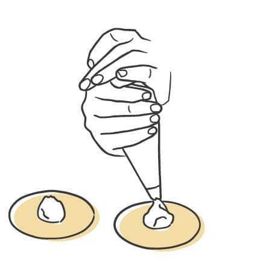
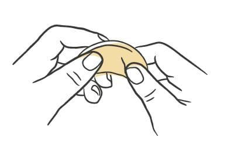
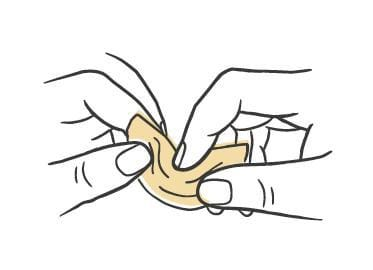
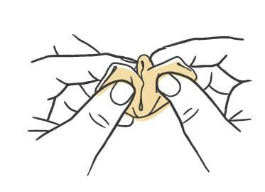
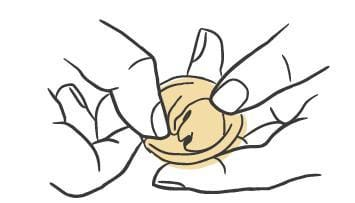
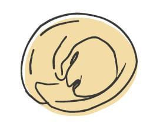

Pasta / Shapes
Cappelletti
- Dough
- Egg Dough
- Region
- Emilia-Romagna, particularly Reggio Emilia
- Rest
- 45 minutes to 1 hour uncovered in the refrigerator
- Source
- Pasta, Missy Robbins
- Formed
- stuffed
Shaping






Method
- Make your chosen egg-based dough, then roll and sheet it.
- Dust a wooden board with 00 flour. Cover a sheet pan with parchment, then dust the parchment with semolina.
- Lay one sheet on the board. Cut rounds with a #70 (2 3/4-inch) round cutter, plain or fluted, spacing them about 1/8 inch apart.
- Load the filling into a pastry bag cut to a 1/2-inch opening. Pipe a quarter-sized dab of filling into the middle of each round.
- If the dough feels dry rather than moderately tacky, mist the rounds with a spray bottle held 8 to 10 inches above the board. Skip this if the dough is already tacky.
- Hold a round in your palm and fold the top half over the bottom half, lining up the edges, to make a half-moon.
- Pinch the edge shut around the filling with thumb and index finger. Work back and forth a few times and push all the air out.
- Press a dimple into the center of the filled side with your index finger.
- With the dimple facing you, take hold of the two ends of the half-moon and draw them toward each other on a slight downward angle. Overlap the two ends and pinch them shut.
- Set the piece on the prepared pan. Fill and fold the rest of the rounds, keeping them in a single layer, and dust the pan again with semolina.
- Repeat with the remaining sheets.
- Refrigerate uncovered for 45 minutes to 1 hour to dry. Covered pieces sweat and get too wet. To hold longer, lay plastic wrap loosely over the pan and refrigerate up to 8 hours.
Notes
- Cut from 2 3/4-inch rounds (#70 cutter), plain or fluted, spaced 1/8 inch apart on the sheet.
- Filling per piece: a quarter-sized circle piped through a 1/2-inch opening.
- The shape is defined by being cut from circles rather than squares and by being fastened tightly against the filling.
- Seal geometry: fold to a half-moon, pinch the edge closed, dimple the filled side, then bring the two ends together on a slight downward angle, cross them, and pinch. Tortellini instead wrap the tips into a ring underneath and flatten the joint.
- Air must be forced out of the edge before the ends are joined.
- A common variation flips the brim up into a collar that hugs the filling.
- Storage: 45 minutes to 1 hour uncovered to dry, then up to 8 hours refrigerated under loose plastic.
- Served with a bold filling against a restrained sauce so the shape carries the plate. Butter with pepper works, as does butter loosened with pasta water and finished with fennel pollen.